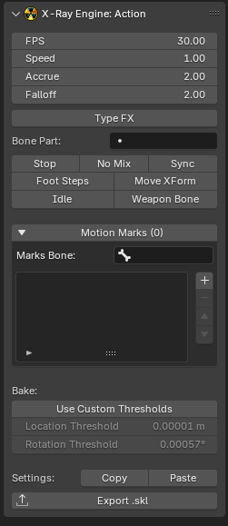

X-Ray Engine: Action

About
This page describes the X-Ray Engine: Action panel. This panel stores animation parameters for skeleton animations (*.skl, *.skls, *.omf, *.object, *.ogf) or path animations (*.anm)
Location
Dope Sheet window > (in blender versions 2.77 and 2.78 in the Graph Editor window) > N-panel > X-Ray tab
Context
The number of parameters depends on the type of object
If the object type is Armature, all parameters except Bake Mode (Auto, On, Off) will be available and all operators will be available
If the object is not Armature, FPS, Bake Mode (Auto, On, Off), Use Custom Thresholds, Location Threshold, Rotation Threshold, but no operators will be available
Parameters
X-Ray Parameters
Parameters that are read or written to files during import/export
FPS
Frame rate of the animation. Usually equal to 30
Speed
Animation playback speed. You can speed up or slow down the animation
Accrue
Blend-In
Falloff
Blend-out. The value must be less than Accrue. If it is not, the engine will calculate its own value for Falloff, which will be less than Accrue by a minimum amount
Type FX
TODO
Bone Part
TODO
Start Bone
TODO
Power
TODO
Stop
Stop at end flag that stops the animation after playing. If off, the animation is played cyclically
No Mix
Animations will not be mixed
Sync
This flag is used to indicate that this animation will synchronize with another animation depending on the Bone Part
Foot Steps
TODO
Move XForm
TODO
Idle
TODO
Weapon Bone
TODO
Motion Marks List
This list stores the names of Custom Properties bones that will be used as Motion Marks. Motion Marks support *.object, *.skl, *.skls, *.ogf, *.omf formats for CS and CoP. To save them to a file, you need to set CS/CoP format when exporting. The Marks Bone parameter specifies the bone whose Custom Properties should be used. The elements of the list are the names of Custom Properties of the bone. Custom Properties need to be animated so that the animation (action) has animation keys for this property. If the property value in a particular frame is zero (or False), then the current frame does not belong to the label interval. For all other values, the keys belong to the label interval.
Addon Parameters
Parameters that are used by the addon inside blender, or during import/export, but are not read or saved to files.
Bake Mode (Auto, On, Off)
Animation bake mode during exporting
- Auto - Automatic mode. The addon itself will calculate whether to bake or not. If the object or bones with animation have constraints, baking will be used, and if there are no constraints, it will not be used
- On - Enable baking
- Off - Disable baking
Use Custom Thresholds
Use arbitrary threshold values for position and rotation during animation key filtering, instead of the default value of 0.00001. Arbitrary values are specified using the Location Threshold, Rotation Threshold parameters
Location Threshold
Threshold for the position
Rotation Threshold
Threshold for rotation
Operators
Copy
Copies animation parameters to the clipboard. The parameters are saved in text form, which can be saved to any text file
Paste
Inserts animation parameters from the clipboard that were copied with Copy or from a text file. You can paste copied parameters from any other open blend file
Export *.skl
Exports one current Action (which is selected in Dope Sheet) to *.skl format.